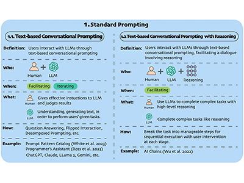
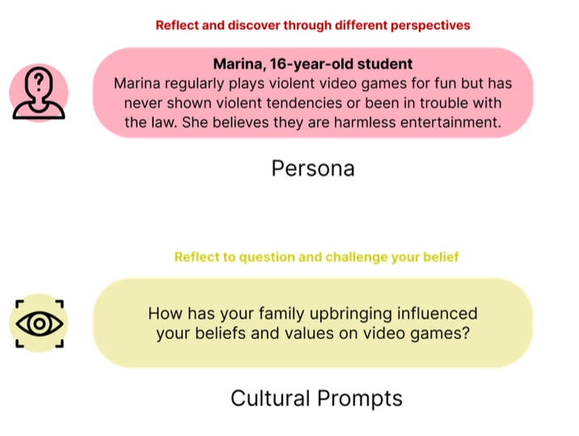

My first name, “Jie”(洁), pronounced like “Jyeah” in English.
I started a postdoctoral associate position in Mens, Manus, and Machina (M3S) team at the Singapore-MIT Alliance for Research and Technology since Feb 2024, working with Prof. Thomas W. Malone. Prior to this, I got my PhD in Information Systems Technology and Design at Singapore University of Technology and Design in Jan 2024, advised by Simon Perrault. My research interests include Human-AI Collaboration, Human-AI Interaction and AI for Social Science. Specifically, I am passionate about:
- Human-LLM Collaboration/Interaction: investigating the various modes of collaboration/interaction between humans and LLMs, building taxonomy between human-LLM collaboration/interaction activities. One of the main use cases I will explore is code auditing;
- AI4SocialScience: exploring efficient AI-assisted tools to enhance qualitative analysis.
🚩 I am passionate about research and would be happy to discuss research ideas/collaboration opportunities! I am also glad to work with both undergraduate and graduate students! Please feel free to contact me at jie.gao[at]smart.mit.edu

News
2024.03 🎉 Our Late-breaking Work "A Taxonomy for Human-LLM Interaction Modes-An Initial Exploration" has been accepted to CHI 2024.
2024.03 We have launched CollabCoder Website. Construction and refinement is ongoing!
2024.01 🎉 One first-authored paper "CollabCoder" and one coauthored paper "Help Me Reflect" have been accepted to CHI2024! (Preprints will have minor refinements in final versions.)
Featured Publications
*Co-first author.
To simplify the reading, I've listed only my main contributions. For a full list and the latest version of my publications, please visit my Google Scholar !
🆕 Check Our New Work!

A Taxonomy for Human-LLM Interaction Modes: An Initial Exploration
Jie Gao*, Simret Araya Gebreegziabher*, Kenny Tsu Wei Choo, Toby Jia-Jun Li, Simon Tangi Perrault, Thomas W. Malone
CHI LBW 2024 Human-LLM Interaction PDF🌟 AI-assisted (LLM-powered) Qualitative Data Analysis:
If you're interested in the development of this line of research, I suggest reviewing the development history of CollabCoder. To gain a full understanding of why I started working on this topic since 2021, I invite you to check the Section 2: Choice of Research Topic of my PhD thesis.


CoAIcoder: Examining the Effectiveness of AI-assisted Human-to-Human Collaboration in Qualitative Analysis.
Jie Gao, Kenny Tsu Wei Choo, Junming Cao, Roy Ka Wei Lee, Simon Perrault.
TOCHI 2023 AI4SocialScience PDF
CollabCoder: A GPT-Powered Workflow for Collaborative Qualitative Analysis.
Jie Gao, Yuchen Guo, Toby Jia-Jun Li, Simon Tangi Perrault.
CSCW demo 2023 LLM+Social Science PDF🤖 LLM-powered Applications:
I am thrilled to be part of my colleagues' LLM projects and have gained valuable insights from our collaboration!


Help Me Reflect: Leveraging Self-Reflection Interface Nudges to Enhance Deliberativeness on Online Deliberation Platforms
Shun Yi Yeo, Gionnieve Lim, Jie Gao, Weiyu Zhang, Simon Tangi Perrault
CHI 2024 PDFExplorations in other directions:
In the early stages of my research, I have explored various areas such as designing, SmartGlass, Social Media, etc. Although not all of these projects were led by me or reached a full paper, I enjoyed the experience and gained valuable knowledge!

Characterizing the Complexity and Its Impact on Testing in ML-Enabled Systems: A Case Sutdy on Rasa.
Junming Cao, Bihuan Chen, Longjie Hu, Jie Gao, Kaifeng Huang, Xin Peng.
ICSME 2023 AI+SE PDF
GlassMessaging: Towards Ubiquitous Messaging Using OHMDs.
Nuwan Janaka, Jie Gao, Lin Zhu, Shengdong Zhao, Lan Lyu, Peisen Xu, Maximilian Nabokow, Silang Wang, Yanch Ong
IMWUT 2023 SmartGlass PDF
Differences of Challenges of Working from Home (WFH) between Weibo and Twitter Users during COVID-19.
Jie Gao, Xiayin Ying, Junming Cao, Yifan Yang, Pin Sym Foong, Simon Perrault.
CHI EA 2022 (Short paper) PDF
Expressive Plant: A Multisensory Interactive System for Sensory Training of Children with Autism.
Jie Gao, Leijing Zhou, Miaomiao Dong, Fan Zhang.
Ubicomp 2018 (Poster) PDF